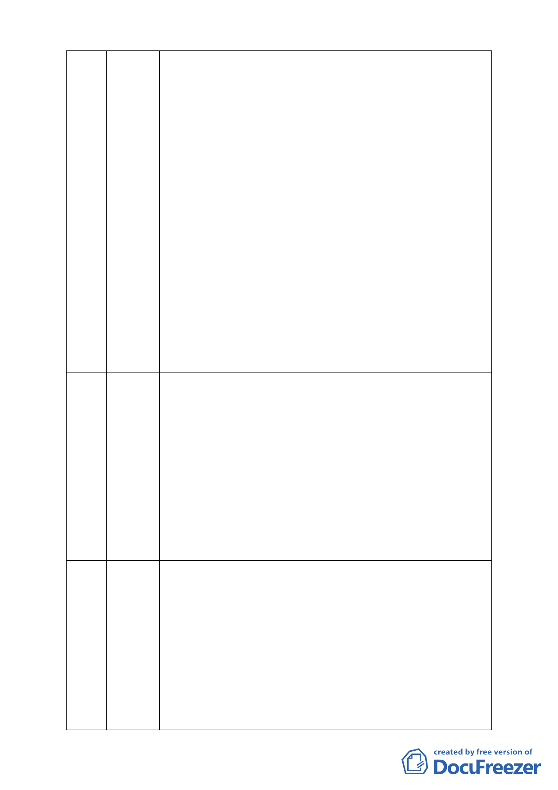

六節滯洪設施，第九十五條第一項第三款規定，1、坡地農地內排
水系統之設計洪水量，以重現期距十年之降雨強度計算。2、滯洪
設施之最大洪峰流量，得依合理化公式估算之。其入流歷線至少採
重現期距五十年以上之洪水，出流歷線則為重現期距二十五年以下
之洪水。3、「台北市山坡地開發建築基地規劃設計技術規範」已廢
止。（台北市政府水利處 990928 第三次討論會議紀錄）本案計劃區
內排水設施採用「台北市山坡地開發建築基地規劃設計技術規範」
之 10 年頻率排洪容量為設計量、計劃區總調洪容量 2562 立方公
尺，不符規定。
九、滯洪沉砂池大幅縮小：本案原有自然水池：40,000 立方公尺，
慈濟之前承諾以五年洪水再現期計算提送審查之滯洪池：13,625 立
方公尺。慈濟 99 年 11 月提送細部計畫以十年洪水再現期計算提送
審查之滯洪池：2,562 立方公尺，綜上，所提細部計畫滯洪沉砂池
為原有自然水池之 1/16，為原承諾 1/5，應不足滯洪防災需要。
十、既成道路具有公共地役權不得違反供公眾通行的目的：所謂既
成道路係指「具有公用地役權之私有道路」，本案北基地東側舊有
「保甲路」長期（20 年）供公共通行使用，具公用地役權：「所有
權人雖保有所有權，依法即不得訴請收回土地，亦不得違反供公眾
通行的目的而為使用 」。
46 黃詩涵 一、依都市計畫法第 24 條規定，慈濟僅能提細部計畫不得提主要
計畫，內政部亦曾就都市計畫法第 27 條第 1 項 3、4 款之申請變更
（林子凌代）
程序及認定進行研商與解釋：都市計畫法第 27 條第 1 項第 3 款所
稱「為適應國防或經濟發展之需要」係指為配合國防或經濟發展所
必需之緊急重大設施，慈濟此案非緊急亦非國防更不是經濟發展，
就程序上而言，本案不應再審下去。否則就是明顯圖利私有土地所
有權人。
二、本案若執意繼續審查，市府方面亦不應球員兼裁判，我們要求
所有的官派委員必須退出，而且我們主張今天所做決議為一違法之
決議。
47 李盈萱 13 年前的溫妮颱風造成我家三人死亡，今天我是以具體的被害人
身份到此懇求委員慎審此案，為獲取公道 13 年來因本人堅持打官
（卓梅芳代）
司，後依市府律師顧立雄主張終致和解，過程中也經過 5 個單位的
鑑定和評估，即大湖山莊街原先係為河谷地不適於居住，加上當時
水土保持、防洪設施沒做好，以致一場輕微的颱風即造成家毀人
亡。今天慈濟找學者來做保證卻贏不了大自然的反撲，如歐洲大風
雪、美國大颶風、中國大洪水，台灣這幾次的颱風也讓大家心驚膽
跳，何況慈濟這塊地在我們的報告中是行水區與漫洪區，懇請委員
要謹慎考慮。
-4-